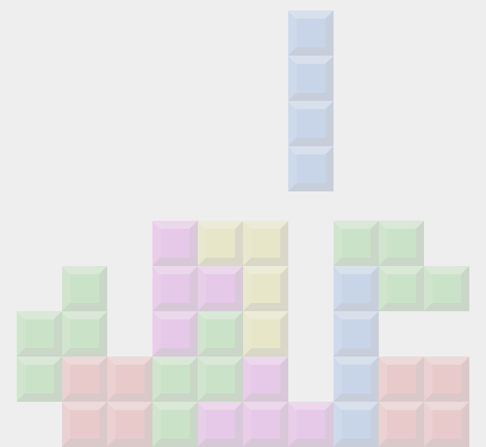

O funcionamento do Pygame(){
Games
Vejamos como se dá a execução do código do jogo da "cobrinha" em Pygame.
Importando o Pygame.
Como já foi mencionado, o Pygame é uma série de módulos da linguagem Python, logo, para o usarmos, é necessário importá-los para o código
import pygame
Pronto, agora já podemos usar as funções do Pygame em nosso código.
Preparando os elementos.
Aqui nós criamos os elementos (objetos) do jogo, tais como: 1) a própria tela; 2) a cobrinha, que pode ser representada como uma lista de de pares (x,y), contendo a coordenada de cada segmento de seu corpo; 3) A fruta, que é uma coordenada (x,y) representando o objetivo da cobrinha.
// Cria uma tela de resolução 800x600 pixels
screen = pygame.display.set_mode((800,600))
// Define o tamanho de cada segmento do corpo, em pixels
tamanho = 5
// Inicia a lista de segmentos da cobrinha
cobra = [(10,10), (10 + tamanho,10), (10 + 2*tamanho,10)]
// Inicia o objeto da fruta, do outro lado da tela
fruta = (750, 550)
screen = pygame.display.set_mode((800,600))
// Define o tamanho de cada segmento do corpo, em pixels
tamanho = 5
// Inicia a lista de segmentos da cobrinha
cobra = [(10,10), (10 + tamanho,10), (10 + 2*tamanho,10)]
// Inicia o objeto da fruta, do outro lado da tela
fruta = (750, 550)
Nessa parte, nós apenas informamos ao Pygame os objetos que iremos usar, perceba que ainda não foi ordenado que seja desenhado na tela.
Desenhando os elementos.
É agora que o Pygame recebe as ordens de desenhar os elementos na tela. Fazemos isso através da função pygame.draw.rect(SCR, COL, REC, 0), que desenha um retângulo REC, de cor COL, na tela SCR
// Preenche a tela com a cor cinza
screen.fill((205,205,205))
// Desenha a cobrinha no primeiro quadro do jogo
for pedra in cobra:
pygame.draw.rect(screen, (0,0,255), (pedra, (tamanho, tamanho)), 0)
// Redesenha a cabeça, em vermelho
pygame.draw.rect(screen, (255,0,0), (cobra[-1], (tamanho,tamanho)), 0)
// Desenha a fruta
pygame.draw.rect(screen, (255,0,0), (fruta, (tamanho,tamanho)), 0)
//Diz ao Pygame: "Agora voce já sabe o que desenhar, então DESENHE!"
pygame.display.flip()
screen.fill((205,205,205))
// Desenha a cobrinha no primeiro quadro do jogo
for pedra in cobra:
pygame.draw.rect(screen, (0,0,255), (pedra, (tamanho, tamanho)), 0)
// Redesenha a cabeça, em vermelho
pygame.draw.rect(screen, (255,0,0), (cobra[-1], (tamanho,tamanho)), 0)
// Desenha a fruta
pygame.draw.rect(screen, (255,0,0), (fruta, (tamanho,tamanho)), 0)
//Diz ao Pygame: "Agora voce já sabe o que desenhar, então DESENHE!"
pygame.display.flip()
Depois desse trecho de código, a primeira tela do jogos estará desenhada. Agora o que nos resta é continuar gerando outras.
Loop.
Usando as informações do estado anterior, o Pygame ira criar uma nova tela, e desenha-la. É necessário que se façam várias checagens, como se a cobrinha atingiu alguma borda, ou pegou a fruta, veja abaixo como podemos verificar se a ela colidiu consigo mesma
...
// Se a cobrinha bateu nela mesma, saia do jogo
if cobra[-1] in cobra[:-1]:
exit()
...
...
/* No final das verificações, ande com a cobrinha um quadrado, retirando o primeiro elemento da lista, e colocando um novo no final */
cobra.pop(0)
cobra.append(novo_quadrado)
...
...
// Se a cobrinha bateu nela mesma, saia do jogo
if cobra[-1] in cobra[:-1]:
exit()
...
...
/* No final das verificações, ande com a cobrinha um quadrado, retirando o primeiro elemento da lista, e colocando um novo no final */
cobra.pop(0)
cobra.append(novo_quadrado)
...
...
Esse último trecho de código é executado repetidamente, até que algum evento faça com que isso mude (o jogador perdeu o jogo, por exemplo).
Bem, é assim que o Pygame funciona. Achou interessante? Confira a documentação, ótimos tutoriais e jogos prontos no site do projeto, e fique ligado na programação do compPET, pois vem aí uma competição de jogos!
Referências

}